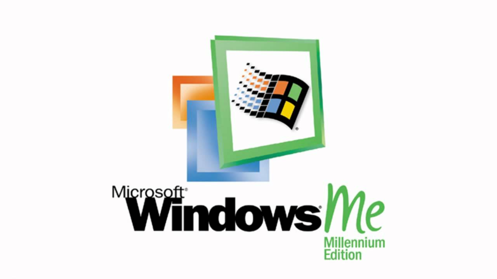
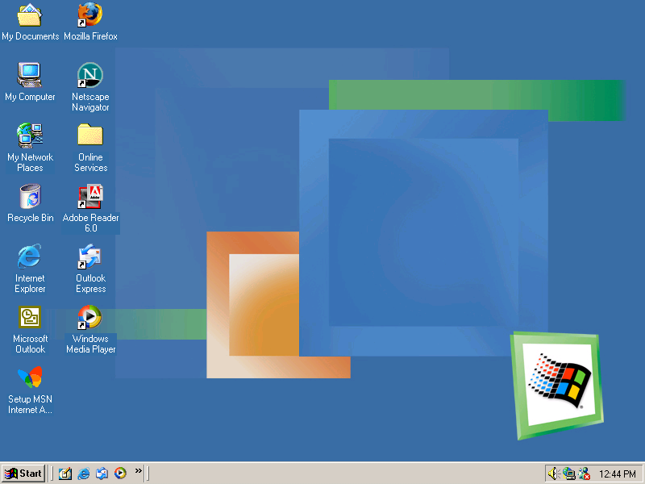

Windows Millennium Edition (ME)

Wersja: Windows ME
Data premiery: 24 Wrzenia 2000
Architektura: 32-bit
Windows Millennium Edition (ME) był ostatnim systemem opartym na jądrze DOS-a, skierowanym do użytkowników domowych. Miał wprowadzić nowoczesne funkcje, ale zyskał opinię jednego z najmniej stabilnych systemów w historii. Niebieski ekran śmierci był tu gościem honorowym!
Data premiery: 24 Wrzenia 2000
Architektura: 32-bit
Windows Millennium Edition (ME) był ostatnim systemem opartym na jądrze DOS-a, skierowanym do użytkowników domowych. Miał wprowadzić nowoczesne funkcje, ale zyskał opinię jednego z najmniej stabilnych systemów w historii. Niebieski ekran śmierci był tu gościem honorowym!
UWAGA!!! Ten system operacyjny od dnia 11 lipca 2006 r. nie jest już wspierany przez Microsoft.
Korzystanie z niego może wiązać się z zagrożeniem bezpieczeństwa oraz brakiem aktualizacji.

Korzystanie z niego może wiązać się z zagrożeniem bezpieczeństwa oraz brakiem aktualizacji.
Wymagania sprztowe
- Procesor: Pentium 150 MHz lub lepszy
- Pami RAM: 32 MB (zalecane 64 MB)
- Dysk twardy: min. 320 MB wolnego miejsca
- Karta graficzna: SVGA 800x600
Instrukcja instalacji
- Pobierz obraz ISO poniżej.
- Stw贸rz bootowaln pyt CD lub użyj emulatora (np. VirtualBox).
- Uruchom instalator z BIOS-u lub rodowiska DOS.
- Postpuj zgodnie z kreatorem i... przygotuj si na niespodzianki